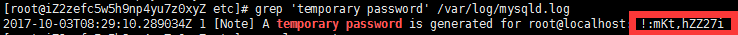

<!DOCTYPE HTML>
<html lang="zh-CN">
<head><meta name="generator" content="Hexo 3.8.0">
    <!--Setting-->
    <meta charset="UTF-8">
    <meta name="viewport" content="width=device-width, user-scalable=no, initial-scale=1.0, maximum-scale=1.0, minimum-scale=1.0">
    <meta http-equiv="X-UA-Compatible" content="IE=Edge,chrome=1">
    <meta http-equiv="Cache-Control" content="no-siteapp">
    <meta http-equiv="Cache-Control" content="no-transform">
    <meta name="renderer" content="webkit|ie-comp|ie-stand">
    <meta name="apple-mobile-web-app-capable" content="我的博客 - blog">
    <meta name="apple-mobile-web-app-status-bar-style" content="black">
    <meta name="format-detection" content="telephone=no,email=no,adress=no">
    <meta name="browsermode" content="application">
    <meta name="screen-orientation" content="portrait">
    <link rel="dns-prefetch" href="https://lives.xtcgch.ink">
    <!--SEO-->

<meta name="description" content="脑容量不够，笔记来凑">


<meta name="robots" content="all">
<meta name="google" content="all">
<meta name="googlebot" content="all">
<meta name="verify" content="all">
    <!--Title-->


<title>【原理】CentOS6-7安装MYSQL数据库 | 我的博客 - blog</title>


    <link rel="alternate" href="/atom.xml" title="我的博客 - blog" type="application/atom+xml">


    <link rel="icon" href="https://blog.xtcgch.ink/img/background/海绵宝宝.ico">

    


<link rel="stylesheet" href="/css/bootstrap.min.css?rev=3.3.7">
<link rel="stylesheet" href="/css/font-awesome.min.css?rev=4.5.0">
<link rel="stylesheet" href="/css/style.css?rev=@@hash">


    


    

</head>

</html>
<!--[if lte IE 8]>
<style>
    html{ font-size: 1em }
</style>
<![endif]-->
<!--[if lte IE 9]>
<div style="ie">你使用的浏览器版本过低，为了你更好的阅读体验，请更新浏览器的版本或者使用其他现代浏览器，比如Chrome、Firefox、Safari等。</div>
<![endif]-->

<body>
    <header class="main-header" style="background-image:url(https://blog.xtcgch.ink/img/head-bg.jpg)">
    <div class="main-header-box">
        <a class="header-avatar" href="/" title="unistd68">
            
        </a>
        <div class="branding">
        	<!--<h2 class="text-hide">Snippet主题,从未如此简单有趣</h2>-->
            
                <h2> 脑容量不够，笔记来凑 </h2>
            
    	</div>
    </div>
</header>
    <nav class="main-navigation">
    <div class="container">
        <div class="row">
            <div class="col-sm-12">
                <div class="navbar-header"><span class="nav-toggle-button collapsed pull-right" data-toggle="collapse" data-target="#main-menu" id="mnav">
                    <span class="sr-only"></span>
                        <i class="fa fa-bars"></i>
                    </span>
                    <a class="navbar-brand" href="https://lives.xtcgch.ink">我的博客 - blog</a>
                </div>
                <div class="collapse navbar-collapse" id="main-menu">
                    <ul class="menu">
                        
                            <li role="presentation" class="text-center">
                                <a href="https://blog.xtcgch.ink/"><i class="fa "></i>主页</a>
                            </li>
                        
                            <li role="presentation" class="text-center">
                                <a href="https://blog.xtcgch.ink/categories/原理/"><i class="fa "></i>原理</a>
                            </li>
                        
                            <li role="presentation" class="text-center">
                                <a href="https://blog.xtcgch.ink/categories/代码/"><i class="fa "></i>代码</a>
                            </li>
                        
                            <li role="presentation" class="text-center">
                                <a href="https://blog.xtcgch.ink/categories/开源/"><i class="fa "></i>开源</a>
                            </li>
                        
                            <li role="presentation" class="text-center">
                                <a href="https://blog.xtcgch.ink/categories/面试/"><i class="fa "></i>面试</a>
                            </li>
                        
                            <li role="presentation" class="text-center">
                                <a href="https://blog.xtcgch.ink/categories/其他/"><i class="fa "></i>其他</a>
                            </li>
                        
                            <li role="presentation" class="text-center">
                                <a href="https://blog.xtcgch.ink/archives/"><i class="fa "></i>时间轴</a>
                            </li>
                        
                    </ul>
                </div>
            </div>
        </div>
    </div>
</nav>
    <section class="content-wrap">
        <div class="container">
            <div class="row">
                <main class="col-md-8 main-content m-post">
                    <p id="process"></p>
<article class="post">
    <div class="post-head">
        <h1 id="【原理】CentOS6-7安装MYSQL数据库">
            
	            【原理】CentOS6-7安装MYSQL数据库
            
        </h1>
        <div class="post-meta">
    
    
    <span class="categories-meta fa-wrap">
        <i class="fa fa-folder-open-o"></i>
        <a href="https://blog.xtcgch.ink/categories/原理">
            原理
        </a>
    </span>
    

    
    <span class="fa-wrap">
        <i class="fa fa-tags"></i>
        <span class="tags-meta">
            
                
                    <a href="https://blog.xtcgch.ink/tags/数据库" title="数据库">
                        数据库
                    </a>
                
                    <a href="https://blog.xtcgch.ink/tags/MySQL" title="MySQL">
                        MySQL
                    </a>
                
                    <a href="https://blog.xtcgch.ink/tags/Linux" title="Linux">
                        Linux
                    </a>
                
            
        </span>
    </span>
    

    
        
        <span class="fa-wrap">
            <i class="fa fa-clock-o"></i>
            <span class="date-meta">2018/11/24</span>
        </span>
        
    
</div>

            
            
            <p class="fa fa-exclamation-triangle warning">
                本文于<strong>1035</strong>天之前发表，文中内容可能已经过时。
            </p>
        
    </div>
    
    <div class="post-body post-content">
        <p><strong>摘要</strong>：本文主要讲CentOS6和7中MYSQL的安装和配置相关的知识点。</p>
<a id="more"></a>
<hr>
<h2 id="1-下载mysql的repo源"><a href="#1-下载mysql的repo源" class="headerlink" title="1. 下载mysql的repo源"></a>1. 下载mysql的repo源</h2><p>CentOS7的yum源中默认是没有mysql的。为了解决这个问题，我们要先下载mysql的repo源。</p>
<figure class="highlight plain"><table><tr><td class="gutter"><pre><span class="line">1</span><br></pre></td><td class="code"><pre><span class="line">wget http://repo.mysql.com/+rpm包</span><br></pre></td></tr></table></figure>
<h2 id="2、安装rpm包"><a href="#2、安装rpm包" class="headerlink" title="2、安装rpm包"></a>2、安装rpm包</h2><figure class="highlight plain"><table><tr><td class="gutter"><pre><span class="line">1</span><br></pre></td><td class="code"><pre><span class="line">sudo rpm -ivh+rpm包</span><br></pre></td></tr></table></figure>
<p>安装了之后在<code>/etc/yum.repos.d/</code>文件夹下会有2个repo包：<br>1、<code>mysql-community.repo</code><br>2、<code>mysql-community-source.repo</code></p>
<h2 id="3、安装mysql"><a href="#3、安装mysql" class="headerlink" title="3、安装mysql"></a>3、安装mysql</h2><figure class="highlight plain"><table><tr><td class="gutter"><pre><span class="line">1</span><br></pre></td><td class="code"><pre><span class="line">sudo yum install mysql-server</span><br></pre></td></tr></table></figure>
<h2 id="4、启动mysql"><a href="#4、启动mysql" class="headerlink" title="4、启动mysql"></a>4、启动mysql</h2><figure class="highlight plain"><table><tr><td class="gutter"><pre><span class="line">1</span><br><span class="line">2</span><br><span class="line">3</span><br></pre></td><td class="code"><pre><span class="line">service mysqld start</span><br><span class="line">或</span><br><span class="line">systemctl start mysqld.service</span><br></pre></td></tr></table></figure>
<h2 id="5、检查mysql-的运行状态"><a href="#5、检查mysql-的运行状态" class="headerlink" title="5、检查mysql 的运行状态"></a>5、检查mysql 的运行状态</h2><figure class="highlight plain"><table><tr><td class="gutter"><pre><span class="line">1</span><br><span class="line">2</span><br><span class="line">3</span><br></pre></td><td class="code"><pre><span class="line">service mysqld status</span><br><span class="line">或</span><br><span class="line">systemctl status mysqld.service</span><br></pre></td></tr></table></figure>
<h2 id="6、修改临时密码"><a href="#6、修改临时密码" class="headerlink" title="6、修改临时密码"></a>6、修改临时密码</h2><p>Mysql5.7默认安装之后root是有密码的。</p>
<h3 id="6-1-获取MySQL的临时密码"><a href="#6-1-获取MySQL的临时密码" class="headerlink" title="6.1 获取MySQL的临时密码"></a>6.1 获取MySQL的临时密码</h3><p>为了加强安全性，MySQL5.7为root用户随机生成了一个密码，在<code>error log</code>中，关于<code>error log</code>的位置，如果安装的是<code>RPM</code>包，则默认是<code>/var/log/mysqld.log</code>。</p>
<p>只有启动过一次mysql才可以查看临时密码</p>
<p>查看临时密码：</p>
<figure class="highlight plain"><table><tr><td class="gutter"><pre><span class="line">1</span><br></pre></td><td class="code"><pre><span class="line">grep &apos;temporary password&apos; /var/log/mysqld.log</span><br></pre></td></tr></table></figure>
<p></p>
<h3 id="6-2-登陆并修改密码"><a href="#6-2-登陆并修改密码" class="headerlink" title="6.2 登陆并修改密码"></a>6.2 登陆并修改密码</h3><p>使用默认密码登录：</p>
<figure class="highlight plain"><table><tr><td class="gutter"><pre><span class="line">1</span><br></pre></td><td class="code"><pre><span class="line">mysql -uroot -p</span><br></pre></td></tr></table></figure>
<p>修改密码</p>
<figure class="highlight plain"><table><tr><td class="gutter"><pre><span class="line">1</span><br></pre></td><td class="code"><pre><span class="line">ALTER USER &apos;root&apos;@&apos;localhost&apos; IDENTIFIED BY &apos;Abc9876543210.&apos;;</span><br></pre></td></tr></table></figure>
<p><strong>注意：可能因为设置的密码安全性太低而会被警告，修改不成功！</strong></p>
<p>授权其他机器进行连接</p>
<figure class="highlight plain"><table><tr><td class="gutter"><pre><span class="line">1</span><br><span class="line">2</span><br></pre></td><td class="code"><pre><span class="line">GRANT ALL PRIVILEGES ON *.* TO &apos;root&apos;@&apos;%&apos; IDENTIFIED BY &apos;Abc9876543210.&apos; WITH GRANT OPTION;</span><br><span class="line">FLUSH PRIVILEGES;</span><br></pre></td></tr></table></figure>
<p><strong>注意：这里的mypassword是其他机器连接时的密码。</strong></p>
<p>如果修改不成功，可能是密码的加密方式不正确</p>
<figure class="highlight plain"><table><tr><td class="gutter"><pre><span class="line">1</span><br><span class="line">2</span><br><span class="line">3</span><br></pre></td><td class="code"><pre><span class="line">ALTER USER &apos;root&apos;@&apos;localhost&apos; IDENTIFIED BY &apos;Abc9876543210.&apos; PASSWORD EXPIRE NEVER;</span><br><span class="line">ALTER USER &apos;root&apos;@&apos;localhost&apos; IDENTIFIED WITH mysql_native_password BY &apos;Abc9876543210.&apos;;</span><br><span class="line">FLUSH PRIVILEGES;</span><br></pre></td></tr></table></figure>
<p>监听所有ip地址的连接</p>
<figure class="highlight plain"><table><tr><td class="gutter"><pre><span class="line">1</span><br><span class="line">2</span><br></pre></td><td class="code"><pre><span class="line">vim /etc/my.cnf</span><br><span class="line">bind-address=0.0.0.0</span><br></pre></td></tr></table></figure>
<h2 id="7、防火墙开放3306端口"><a href="#7、防火墙开放3306端口" class="headerlink" title="7、防火墙开放3306端口"></a>7、防火墙开放3306端口</h2><p>1、进入防火墙配置文件</p>
<figure class="highlight plain"><table><tr><td class="gutter"><pre><span class="line">1</span><br></pre></td><td class="code"><pre><span class="line">sudo vim /etc/sysconfig/iptables</span><br></pre></td></tr></table></figure>
<p>2、添加防火墙规则</p>
<figure class="highlight plain"><table><tr><td class="gutter"><pre><span class="line">1</span><br></pre></td><td class="code"><pre><span class="line">-A INPUT -p tcp -m state --state NEW -m tcp --dport 3306 -j ACCEPT</span><br></pre></td></tr></table></figure>
<p>3、重启防火墙服务</p>
<figure class="highlight plain"><table><tr><td class="gutter"><pre><span class="line">1</span><br></pre></td><td class="code"><pre><span class="line">sudo service iptables</span><br></pre></td></tr></table></figure>
    </div>
    
    <div class="post-footer">
        <div>
            
        </div>
        <div>
            
        </div>
    </div>
</article>

<div class="article-nav prev-next-wrap clearfix">
    
        <a href="/2018/11/24/tcp&udp/" class="pre-post btn btn-default" title="【原理】TCP和UDP协议的一些理解">
            <i class="fa fa-angle-left fa-fw"></i><span class="hidden-lg">上一篇</span>
            <span class="hidden-xs">【原理】TCP和UDP协议的一些理解</span>
        </a>
    
    
        <a href="/2018/11/23/pointer&ref/" class="next-post btn btn-default" title="【原理】指针和引用">
            <span class="hidden-lg">下一篇</span>
            <span class="hidden-xs">【原理】指针和引用</span><i class="fa fa-angle-right fa-fw"></i>
        </a>
    
</div>


    <div id="comments">
        
    
    <div id="vcomments" class="valine"></div>
    <script src="//cdn1.lncld.net/static/js/3.0.4/av-min.js"></script>
<script src="/assets/valine.min.js"></script>

    <script>
        new Valine({
            av: AV,
            el: '#vcomments',
            appId: 'XWA5gq7VCJybw7YQhf5HG20r-gzGzoHsz',
            appKey: '8FW1WEwrysHXaUD1bhGn2Rp8',
            placeholder: '说点什么吧',
            notify: true,
            verify: false,
            avatar: 'https://blog.xtcgch.ink/img/comment-avatar.jpg',
            meta: 'nick,mail'.split(','),
            pageSize: '10',
            path: window.location.pathname,
            lang: 'zh-CN'.toLowerCase()
        })
    </script>


    </div>


                </main>
                
                    <aside id="article-toc" role="navigation" class="col-md-4">
    <div class="widget">
        <h3 class="title">文章目录</h3>
        
            <ol class="toc"><li class="toc-item toc-level-2"><a class="toc-link" href="#1-下载mysql的repo源"><span class="toc-text">1. 下载mysql的repo源</span></a></li><li class="toc-item toc-level-2"><a class="toc-link" href="#2、安装rpm包"><span class="toc-text">2、安装rpm包</span></a></li><li class="toc-item toc-level-2"><a class="toc-link" href="#3、安装mysql"><span class="toc-text">3、安装mysql</span></a></li><li class="toc-item toc-level-2"><a class="toc-link" href="#4、启动mysql"><span class="toc-text">4、启动mysql</span></a></li><li class="toc-item toc-level-2"><a class="toc-link" href="#5、检查mysql-的运行状态"><span class="toc-text">5、检查mysql 的运行状态</span></a></li><li class="toc-item toc-level-2"><a class="toc-link" href="#6、修改临时密码"><span class="toc-text">6、修改临时密码</span></a><ol class="toc-child"><li class="toc-item toc-level-3"><a class="toc-link" href="#6-1-获取MySQL的临时密码"><span class="toc-text">6.1 获取MySQL的临时密码</span></a></li><li class="toc-item toc-level-3"><a class="toc-link" href="#6-2-登陆并修改密码"><span class="toc-text">6.2 登陆并修改密码</span></a></li></ol></li><li class="toc-item toc-level-2"><a class="toc-link" href="#7、防火墙开放3306端口"><span class="toc-text">7、防火墙开放3306端口</span></a></li></ol>
        
    </div>
</aside>

                
            </div>
        </div>
    </section>
    <footer class="main-footer">
    <div class="container">
        <div class="row">
        </div>
    </div>
</footer>

<a id="back-to-top" class="icon-btn hide">
	<i class="fa fa-chevron-up"></i>
</a>


    <div class="copyright">
    <div class="container">
        <div class="row">
            <div class="col-sm-12">
                <div class="busuanzi">
    
</div>

            </div>
            <div class="col-sm-12">
                <span>Copyright &copy; 2018
                </span> |
                <span>
                    Powered by <a href="//hexo.io" class="copyright-links" target="_blank" rel="nofollow">Hexo</a>
                </span> |
                <span>
                    Theme by <a href="//github.com/shenliyang/hexo-theme-snippet.git" class="copyright-links" target="_blank" rel="nofollow">Snippet</a>
                </span>
            </div>
        </div>
    </div>
</div>


<script src="/js/app.js?rev=@@hash"></script>

</body>
</html>